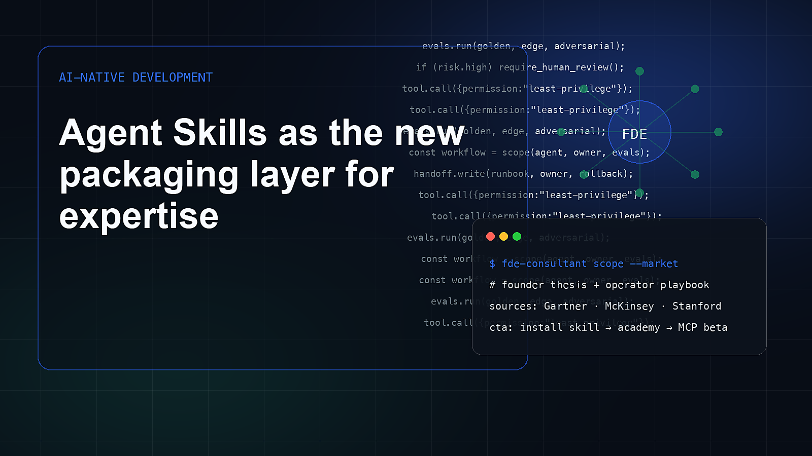

Agent Skills as the new packaging layer for expertise
Agent Skills are quietly turning expertise into installable software. The strategic question is which knowledge deserves to become a skill, and which should stay as documentation.
The useful way to read the current AI market is not as a sequence of model launches. It is a shift in how work is specified, delegated, verified, and owned. Agent Skills as the new packaging layer for expertise matters because skills and agent instruction packages becoming distribution formats for expert workflows changes where value is captured. A founder who only watches model benchmarks will miss the operational layer: who decides what the agent should do, what context it can use, what tools it can call, what counts as failure, and how the result is handed to a team that must live with it after the demo.
The timing is important. Claude Code, Codex, Windsurf, and repository instruction patterns show that agent systems are moving beyond chat prompts into persistent task packages. This is the distribution moment for FDE Consultants Protocoles. Generative AI has become mainstream fast enough that buyers now know the language but not necessarily the implementation discipline. That creates a strange market: more companies can imagine AI use cases, yet many still cannot explain the process, data, error cost, current baseline, or success metric. This gap is exactly where forward deployed engineering becomes commercially relevant.
For a founder, the market context should change product strategy. If skills and agent instruction packages becoming distribution formats for expert workflows is real, the winning product is not merely a UI that makes a model easier to access. The product must reduce uncertainty for a buyer. It must show how the workflow is selected, how the agent is constrained, how outputs are checked, and how the customer team maintains the system.
The winners in this category will be skills with references, scripts, templates, and tests, communities that improve shared methods, operators who treat skills as living artifacts. They will sound less like hype machines and more like field teams: specific, measurable, grounded, willing to say no. The strongest companies will know when not to use an agent, when to require human review, when to stay local-first, and when a workflow is mature enough for a hosted tool layer.
The losers will be prompt packs with no executable assets, skills that hide vague advice behind branding, closed methods that cannot earn developer trust. Their failure will not always look like a broken demo. Often it will look like a pilot that never becomes owned software, a customer success story with no baseline, or a beautiful interface that cannot pass procurement because security, data, ownership, and monitoring were treated as afterthoughts.
Compounding advantage
- skills with references, scripts, templates, and tests
- communities that improve shared methods
- operators who treat skills as living artifacts
False starts
- prompt packs with no executable assets
- skills that hide vague advice behind branding
- closed methods that cannot earn developer trust
How to act on this trend
- Keep the Skill local-first and inspectable.
- Document runtime compatibility honestly.
- Use scripts for 6-Q, ROI, ontology, and evals.
- Make every Academy module produce a skill-compatible artifact.
- Invite contributions that add examples and tests.
- Do not pretend hosted distribution exists before it does.
Market evidence
Install the method before the platform
Use this article as strategic context, then install the open-source Skill and make your agent produce FDE artifacts before implementation.